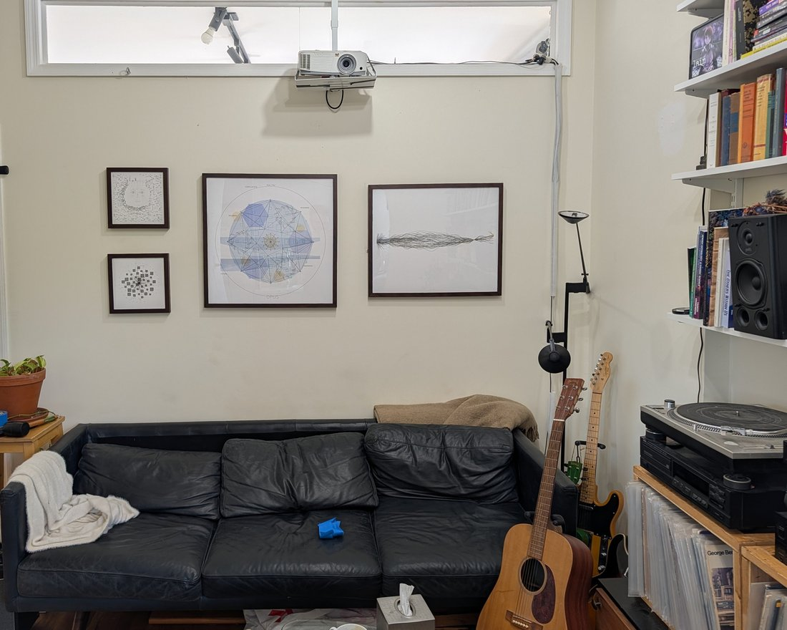

About 6 months ago I bought some work from @d33v33d0 -- plotter arm self depictions by Opus 4.1, Gemini 2.5 Pro, and Grok 4 -- and I finally got them framed professionally and hung. Need to adjust placement a bit but very happy to have these physical works in my space! https://t.co/kJbTmQGyZ1
